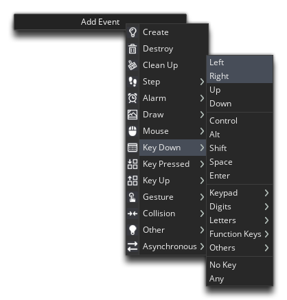

When programming, everything can be broken down to a fairly simply rule:
if this then that
So, all a program does is check if this happens, and if it does then that happens - like, "if a key is pressed then the player will move". Put into a more GameMaker Studio 2 friendly format it would be expressed as
if event then act
Which means that if an event is triggered, then a specific action must be performed. An event is simply a moment in time when something happens, and some events can be triggered once (like the Global Mouse Left Down event) or can be triggered every game frame (like the Step Event). Let's look at how to use these events to make our ship perform an action, in this case, move.
You'll need to open the object "obj_ship" (if it's not already open) by double clicking  it in the resource tree. When open, you can then click
it in the resource tree. When open, you can then click  on the Add Event to bring up the Event List:
on the Add Event to bring up the Event List:
There are two ways that we can check if the player is moving:
- Use the discreet Keyboard Events, which will only be triggered when a key press is detected, or
- Use the Step Event and check using code for a keypress every step (game frame)
What you use in your projects is largely a matter of choice and will depend on how you like to work and the structure of your project. In this case, we are going to use the keyboard Down Events, which are events that will be triggered as long as the specified key is held down. Any action code we add in here, will be run once for every game frame that the key is held down for, so if we held the key down for a second, it would have run the actions the event contains 60 times, since our game speed is set to 60FPS.
Go ahead and add a Keyboard Down Event for the left arrow down and then another one for the right arrow down (both are highlighted in the image below to illustrate the ones you need, but you need to add them one at a time):

These events are our "if" - asking "if a key is held down" - but we haven't told GameMaker Studio 2 what to do if that is actually true. For that we'll need to add some DnD™. You'll see that when you added the events, each one added a tab within the DnD™ Editor for you to add your actions into:
Here you drag actions from the different Toolbox groups on the right and "chain" them together to create the game logic. So, the basic interpretation of what we want to do first would be "if the left key is pressed, rotate the ship to the left", and we have the "if" part done using the Keyboard Down Event, which means we have to do the "rotate the ship" part now.
Click on the "Key Down - Left" left tab in the DnD™ Editor to select that event, then go to the Instances section of the Toolbox and drag Set Instance Rotation into the editor:
With this action we are adding 5 to the image_angle of the instance every step (game frame) that the key is held down. The image_angle variable governs the angle at which the assigned sprite will be drawn, and the action Set Instance Rotation sets this value. Note that we have also checked the relative flag on the action. If we don't check that then the action will set the image_angle to an absolute values, i.e. it will always equal 5. But by checking relative, we are saying to GameMaker Studio 2 that the value should be added to the current value, i.e. image_angle = image_angle + 5.
Why are we adding 5 if we are turning left? That's because angles in GameMaker Studio 2 go anti-clockwise with 0° being to the right:
This is why we made our ship sprite facing right - it makes setting the angles when rotating much easier!
We can use almost the exact same action for turning the ship to the right, so right click  on the action, then select Copy, then click on the tab for "Key Down - Right to select it. Right click
on the action, then select Copy, then click on the tab for "Key Down - Right to select it. Right click  again in the DnD™ editor workspace and select Paste. You need to edit the amount to change the angle by to -5, since we want it to rotate to the right:
again in the DnD™ editor workspace and select Paste. You need to edit the amount to change the angle by to -5, since we want it to rotate to the right:
You can press the Play button now, and if you press the left/right arrow keys you should see your ship instance rotating.

We are now ready to make the player ship move! Click "Next" to continue...